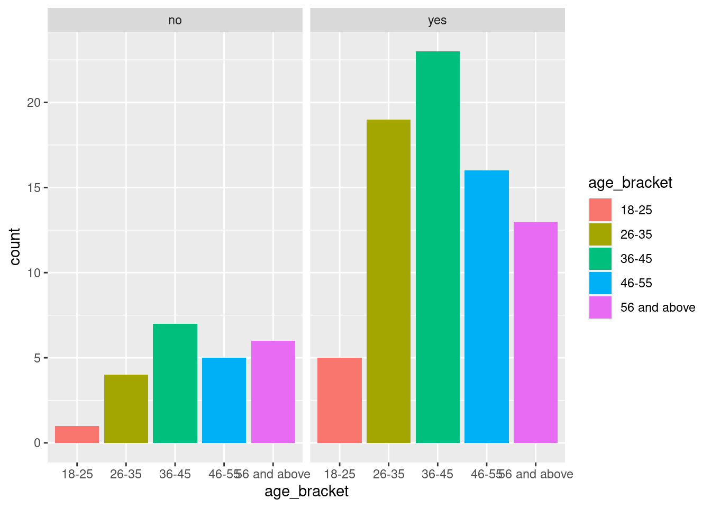

sanitation <- read_csv(here::here("data/raw/Sanitation_investiment.csv")) |>
mutate(id = row_number()) |>
relocate(id) |>
janitor::clean_names()willingness to invest in sanitation facilities
Project description
Data analysis to determine factors that influence households willingeness to invest in sanitation facilities in Bomet Sub-county.
objectives of the study
#1. To assess the proportion of willingness to invest in sanitation facilities by households in Bomet Sub-county.
#2. To determine the demographic and socio-cultural factors that influences the willingness to invest in sanitation facilities by households in Bomet Sub-county.
#3. To determine the economic and financial factors that influences the willingness to invest in sanitation facilities by householdsin Bomet Sub-county.
Data Import
data cleaning
#renaming of data frame
sanitation_clean <- sanitation |>
mutate(id = row_number()) |>
relocate(id) |>
janitor::clean_names()
sanitation_clean <- sanitation_clean |>
rename(community_health_officers = "source_of_information_community_health_volunteers",
media ="source_of_information_media",
ngo_workers = "source_of_information_ngo_workers",
local_markertes = "source_of_information_local_marketers",
others = "source_of_information_others",
quality_of_toilet = "quality_of_toilet_25",
latrine_charcteristics = "quality_of_toilet_30",
motivating_factors = "if_yes_motivating_factors",)
sanitation_clean <- sanitation_clean |>
rename(public_health_officers = "source_of_information_public_health_officers"
)
#removing column
sanitation_clean$source_of_information = NULL
sanitation_clean$motivating_factors = NULL
sanitation_clean$culture= NULL
sanitation_clean$impacts_of_open_defecation = NULLconverting categorical variables to factors
sanitation_clean <- sanitation_clean |>
mutate(age_bracket = factor(age_bracket))
sanitation_clean |>
mutate(gender = factor(gender))# A tibble: 99 × 52
id gender age_bracket education religion household_size know_sanitation
<int> <fct> <fct> <chr> <chr> <dbl> <chr>
1 1 male 18-25 primary christi… 5 yes
2 2 male 26-35 secondary christi… 6 no
3 3 prefer n… 56 and abo… college muslim 4 yes
4 4 male 46-55 universi… Other 5 yes
5 5 female 26-35 universi… christi… 8 yes
6 6 male 36-45 primary christi… 4 yes
7 7 female 18-25 primary christi… 3 no
8 8 male 46-55 universi… Other 5 yes
9 9 male 56 and abo… no educa… christi… 3 yes
10 10 prefer n… 26-35 college Other 2 yes
# ℹ 89 more rows
# ℹ 45 more variables: public_health_officers <dbl>,
# community_health_officers <dbl>, media <dbl>, ngo_workers <dbl>,
# local_markertes <dbl>, others <dbl>, presence_of_latrine <chr>,
# type_latrine_own <chr>, disease_prevention <dbl>, dignity <dbl>,
# privacy <dbl>, safety <dbl>, prestige <dbl>, if_no <chr>,
# benefit_of_use_latrine <chr>, quality_of_toilet <dbl>, …education_levels <- c("no education", "primary", "secondary", "college", "university")
sanitation_clean <- sanitation_clean |>
mutate(education = factor(education,levels = education_levels))
religion_levels <- c("christian", "muslim", "Other")
sanitation_clean <- sanitation_clean |>
mutate(religion = factor(religion, levels = religion_levels))
sanitation_clean <- sanitation_clean |>
mutate(sanitation_organizations = factor(sanitation_organizations),
employement_status = factor(employement_status),
willingness_to_invest = factor(willingness_to_invest),
level_of_willingness = factor(level_of_willingness),
knowledge_on_financial_institutions = factor(knowledge_on_financial_institutions),
member_to_savings_and_lendings_groups = factor(member_to_savings_and_lendings_groups),
loan = factor(loan),
sanitation_loan = factor(sanitation_loan),
if_no = factor(if_no),
know_sanitation = factor(know_sanitation),
presence_of_latrine = factor(presence_of_latrine),
type_latrine_own = factor(type_latrine_own),
benefit_of_use_latrine = factor(benefit_of_use_latrine),
sanitation_organizations = factor(sanitation_organizations),
know_sanitation = factor(know_sanitation),
income = factor(income),
cost_of_latrine = (cost_of_latrine),
sanitation_laws = factor(sanitation_laws))
attach(sanitation_clean)
#checking var(class and level)
class(sanitation_clean$benefit_of_use_latrine) [1] "factor"levels(sanitation_clean$benefit_of_use_latrine)[1] "Don't know" "No" "Yes" data cleaning for multiple choice questions
#1 Where do you mainly get information on sanitation?
sanitation_information <- sanitation_clean |>
select( public_health_officers:others) |>
pivot_longer(cols = public_health_officers:others,
names_to = "information",
values_to = "answer")
sanitation_information|>
filter(answer == 1) |>
group_by(information) |>
count()# A tibble: 6 × 2
# Groups: information [6]
information n
<chr> <int>
1 community_health_officers 74
2 local_markertes 10
3 media 41
4 ngo_workers 19
5 others 15
6 public_health_officers 42#2 What are the consequences of not using latrines?(mark all that apply)
motivation <- sanitation_clean |>
select( disease_prevention:prestige) |>
pivot_longer(cols = disease_prevention:prestige,
names_to = "consequences",
values_to = "answer")
motivation|>
filter(answer == 1) |>
group_by(consequences) |>
count()# A tibble: 5 × 2
# Groups: consequences [5]
consequences n
<chr> <int>
1 dignity 40
2 disease_prevention 50
3 prestige 11
4 privacy 28
5 safety 15#3 What characteristics would you like to see in your latrine of choice? (mark all that apply)
latrine_charcteristics <- sanitation_clean |>
select( clean_floor_and_slab:lockable_door) |>
pivot_longer(cols = clean_floor_and_slab:lockable_door,
names_to = "quality_of_toilet",
values_to = "answer")
latrine_charcteristics |>
filter(answer == 1) |>
group_by(quality_of_toilet) |>
count()# A tibble: 4 × 2
# Groups: quality_of_toilet [4]
quality_of_toilet n
<chr> <int>
1 clean_floor_and_slab 41
2 covered_squat_hole 11
3 lockable_door 68
4 with_wall_and_roof 80#4What cultures do exist in your community that affect owning and use of latrines? (mark all that apply)
culture <- sanitation_clean |>
select( in_laws_do_not_share :people_living_with_chronic_illnesses_do_not_share) |>
pivot_longer(cols = in_laws_do_not_share :people_living_with_chronic_illnesses_do_not_share,
names_to = "existing_cultures",
values_to = "answer")
culture |>
filter(answer == 1) |>
group_by(existing_cultures) |>
count()# A tibble: 4 × 2
# Groups: existing_cultures [4]
existing_cultures n
<chr> <int>
1 children_do_not_share_with_adults 37
2 in_laws_do_not_share 41
3 people_living_with_chronic_illnesses_do_not_share 33
4 visitors_do_not_share 9#5 What hinders you/people from your community from accessing financial services?(mark all that apply)
loan_factors <- sanitation_clean |>
select(financial_knowledge:employment_status) |>
pivot_longer(cols = financial_knowledge:employment_status,
names_to = "barrier_to _loan_services",
values_to = "answer")
loan_factors |>
filter(answer == 1) |>
group_by(`barrier_to _loan_services`) |>
count()# A tibble: 4 × 2
# Groups: barrier_to _loan_services [4]
`barrier_to _loan_services` n
<chr> <int>
1 cost_of_service 24
2 employment_status 47
3 financial_knowledge 73
4 physical_distance_to_service_point 18data explore
type_of_latrine <- sanitation_clean |>
filter(!is.na(type_latrine_own)) |>
group_by(type_latrine_own) |>
count()
latrine_access_if_dodnt_own <- sanitation_clean |>
filter(!is.na(if_no)) |>
group_by(if_no) |>
count()
ggplot(data = sanitation_clean,
aes(x = age_bracket, fill = age_bracket))+
geom_bar(stat = "count")+
facet_grid(~willingness_to_invest)
write.csv(sanitation_clean, "/cloud/project/data/processed/sanitation_clean.csv")